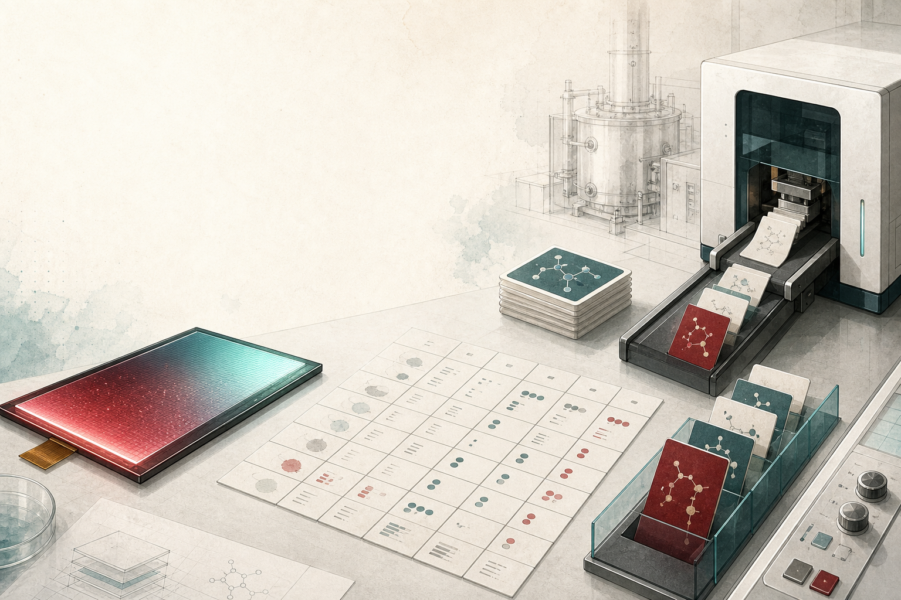
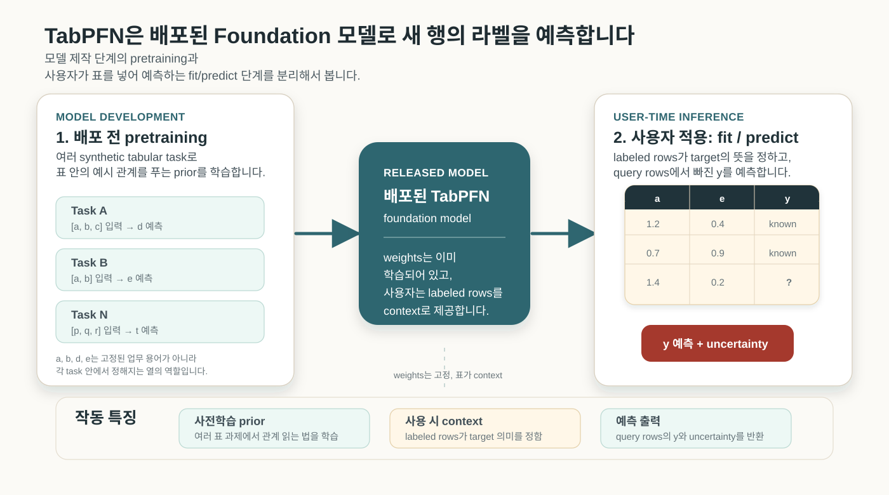
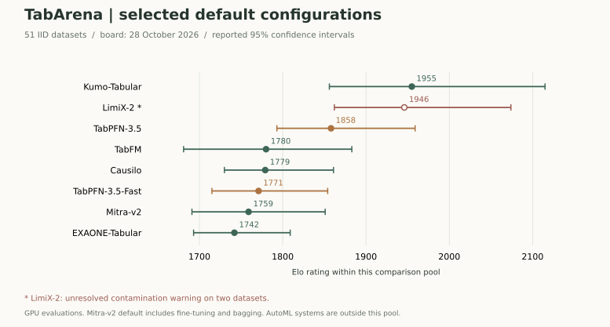
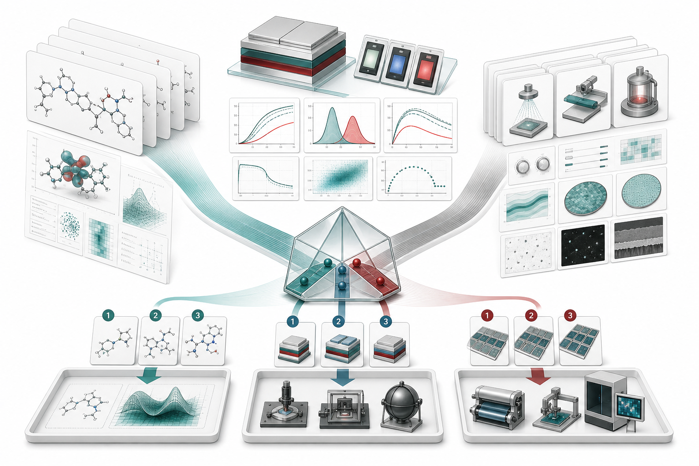

OLED 연구에서는 다음 후보 하나를 확인하는 데에도 계산과 실험이 필요합니다. 이미 얻은 라벨이 적더라도 그 표로 다음 후보의 순서를 정할 수 있다면, 비싼 확인 과정에 쓸 자원을 더 구체적으로 배분할 수 있습니다. TabPFN은 미리 학습한 모델로 새 표를 예측해, 이런 후보 선택의 가능성을 빠르게 시험하게 합니다.
이때 입력 표에는 값이 만들어진 조건도 담겨야 합니다. 분자 계산의 에너지는 계산 방법과 환경에, 소자의 수명은 제작·측정 조건에 따라 의미가 달라집니다. 연구자와 엔지니어가 그 차이를 어떻게 기록하고 어떤 라벨과 연결하느냐가 예측 모델의 쓰임을 정합니다.
이 글을 처음 공개한 2026년 5월 이후, 사전학습된 예측기를 고르는 선택지도 크게 늘었습니다. Google의 TabFM과 NVIDIA의 Kumo Tabular가 공개됐고, 예측을 데이터베이스에서 바로 호출하는 서비스도 등장했습니다. [1] [2] [3] 작은 실험표에서 출발한 질문은 이제 같은 예측 능력을 얼마나 다양한 표와 업무에 다시 쓸 수 있느냐로 이어집니다.
합성 표에서 배운 모델, 새 표에서 읽는 관계
표 데이터의 열 하나는 데이터셋마다 다른 뜻을 가집니다. 분자의 에너지와 공정 온도, 공급 lot 번호가 한 표에 놓일 수 있고, 결측과 범주형 변수, 측정 조건과 선택 편향도 섞입니다. 이런 데이터에서는 XGBoost, LightGBM, CatBoost 같은 gradient boosting 계열이 오랫동안 강한 비교 모델이었습니다.
Hollmann 등의 Nature 논문 [4]은 다양한 합성 표 과제로 transformer를 사전학습한 TabPFN v2를 제시했습니다. 라벨이 있는 학습 행과 예측할 행을 문맥으로 제공하면 새 행의 라벨을 추정합니다. 일반적인 fit·predict 사용에서는 배포된 가중치를 다시 학습하지 않습니다. 이렇게 사전학습한 모델을 여러 새 문제에 재사용한다는 의미에서 Foundation 모델이라 부릅니다. 비교용 baseline이라는 뜻의 ‘기준 모델’과는 구별합니다.
논문은 10,000개 샘플·500개 특징 이하의 데이터셋을 평가해 기본 TabPFN의 분류 평균 2.8초, 회귀 평균 4.8초를 보고했습니다. 모든 방법에 CPU 8코어를 배정하고 TabPFN에는 RTX 2080 Ti GPU를 추가한 평가 환경의 수치입니다. 최대 4시간 튜닝한 개별 비교 모델과의 결과와 AutoGluon 1.0 앙상블 비교도 구별해야 합니다. AutoGluon보다 우세한 결과는 분류에서 기본 TabPFN, 회귀에서는 최소 300초 튜닝한 TabPFN 후처리 앙상블(PHE)에 해당합니다. 새 OLED 표에서의 시간과 정확도는 같은 검증 분할에서 다시 측정할 대상입니다.
사용자 표가 정하는 예측 문제

fit(X_train, y_train) 또는 API의 fit 단계로 labeled rows를 context로 제공합니다. 그 뒤 X_test 같은 query rows의 라벨을 예측합니다. 사전학습과 사용 시점의 문맥을 구별해 그린 설명 도식입니다.사용자가 제공하는 라벨 있는 행이 새 문제의 예시가 되고, query 행이 예측 대상이 됩니다. 사전학습에 없던 프로젝트의 a, e라는 열도 이 관계 속에서 다룰 수 있습니다. 어떤 열을 특징량(feature)으로 삼고 무엇을 예측 라벨로 둘지는 사용자 데이터가 정합니다.
OLED 계산값과 검사 recipe, lot 이력을 함께 읽으려면 먼저 이 값들이 어떤 예측 문제를 이루는지 정해야 합니다. 데이터 생성 이력(provenance)은 값이 어디서 어떤 절차와 조건을 거쳐 만들어졌는지 남기는 기록입니다. FAIR 원칙과 AiiDA의 계산 이력 관리가 강조하는 재사용의 조건도 이 문제와 연결됩니다. [5] [6]
5월 이후, 표 모델 경쟁의 새로운 선택
5월 17일의 첫 공개와 5월 21일의 개정 때에도 TabPFN-3는 이미 큰 표의 문맥 학습과 text·thinking API를 제시하고 있었습니다. [7] 그 뒤 다섯 달 동안의 변화는 이런 방향을 더 많은 연구팀이 서로 다른 설계로 발전시키고, 더 까다로운 데이터에서 비교하기 시작했다는 데 있습니다. 9월 15일 공개된 TabPFN-3.5는 셀 표현과 합성 데이터의 prior를 바꾸어, 범주가 많은 열과 넓은 표, 그룹·시간 분할에서의 예측을 개선했습니다. Fast·Plus·Thinking은 각각 지연시간, 텍스트·날짜 처리, 추가 추론 계산의 선택을 달리합니다. 이는 9월 22일 v2 기술보고서의 개발진 평가이며, 일반 모델과 API의 처리 기능도 구분해야 합니다. [8]
이 분야의 설계는 표 안의 관계를 얼마나 보존하면서 계산량을 줄일지에 따라 갈립니다. TabFM은 행·열의 상호작용을 먼저 학습한 뒤 각 행을 압축하고, 압축된 행들로 문맥 예측을 수행합니다. [9] EXAONE Tabular는 셀 표현을 유지하면서 특징 간 관계와 예시 간 관계를 번갈아 읽습니다. [10] 합성 표의 생성 방식도 모델이 새 표에서 예상하는 관계를 정합니다. 실제 표를 사전학습에 사용하는 TabDPT의 계열도 있어, 어떤 표를 학습했는가와 그 안의 관계를 어떻게 읽는가가 함께 경쟁하고 있습니다. [11]
| 모델·확인한 공개 시점 | 발전시킨 방향 | 연구·제조에서 비교할 이유와 활용 조건 |
|---|---|---|
| TabPFN-3.5 · 9월 | 합성 prior와 표현을 개선하고 일반·Fast·Plus·Thinking 경로를 구분 | 여러 입력 형태와 예측 분포를 함께 살필 유력 후보. 로컬 가중치와 API 기능·이용 조건을 나누어 확인합니다. [8] |
| NVIDIA Kumo Tabular · 9월 23일 | 크기별 모델, 행 압축과 문맥 cache 재사용 | 정확도와 반복 query 비용을 함께 비교할 후보. 가중치는 OpenMDW-1.1로 공개됐습니다. [2] [12] |
| LimiX-2 · 보고서 9월 15일, 코드·모델 16일 | 관측 패턴을 바꾸는 학습으로 분류·회귀·결측치 대체를 한 모델에 결합 | 결측과 조건부 예측을 연결하는 연구 방향. 가중치는 비상업 조건이며, 아래의 공개 평가 경고도 확인해야 합니다. [13] |
| Google TabFM · 6월 30일 공개, 보고서 9월 29일 | 특징 관계의 학습과 행 압축을 결합하고 SQL 예측으로 연결 | 데이터가 있는 곳에서 예측을 호출하는 사용 방식. 기본 모델·앙상블 확장·LLM을 쓴 TabFM-Auto는 서로 다른 평가 조건입니다. [1] [9] |
| TabICLv2 · 2월 공개, ICML 2026 | 효율적인 행 표현과 긴 문맥, 다양한 합성 prior | 5월 이전부터 있던 강한 비교 기준. 현재는 가중치·사전학습·합성 데이터 생성 코드까지 공개돼 연구자가 원리를 검토하고 수정할 수 있습니다. [14] [15] |
| Amazon Mitra-v2 · 보고서 9월 3일 | 합성 prior와 최적화·문맥 범위를 개선한 비교적 작은 모델 | 가중치·학습 코드가 Apache 2.0으로 공개된 적응 학습의 선택지. 보고서의 default는 50-step fine-tuning과 8-fold bagging을 포함합니다. [16] |
| LG EXAONE Tabular 1.0 · 보고서 8월 26일 | 약 2,100만 매개변수의 셀 단위 상호작용 설계 | 모델 크기와 분포 예측 품질을 함께 비교할 후보. 공개 추론 코드와 비상업 가중치의 조건은 다릅니다. [10] |
현재 좋은 평가를 받는 모델을 고를 때에는 같은 날짜의 같은 비교 집합을 보는 편이 유용합니다. 그림 3은 10월 28일 갱신된 공식 TabArena의 개별 모델 비교에서 선택한 기본 설정들을 보여줍니다. 51개 IID 데이터셋에서 Kumo와 TabPFN-3.5는 유력한 후보이며, Causilo와 TabPFN-3.5-Fast처럼 응답 지연에 무게를 둔 선택도 있습니다. [17] [18] Elo는 비교 집합 안의 상대 성적을 나타내며 정확도 백분율이 아닙니다. 상위 모델의 신뢰구간이 겹치므로 이 그림만으로 모든 표에 적용할 단일 승자를 정할 수는 없습니다.

LimiX-2는 높은 점수를 보이지만 공식 보드가 두 데이터셋에 데이터 오염 경고를 연결하고 있습니다. TabArena 기여자는 일부 전처리를 제거한 설정에서 열 순서를 바꾸면 성능이 크게 달라지는 관찰과 재현 코드를 공개했습니다. 10월 29일 확인 시 이 문제는 미해결 상태였으며, 여기서는 보고된 관찰과 의혹으로 다룹니다. [19] 모델의 유망한 설계와 공개 점수의 신뢰성은 각각 확인할 문제입니다.
더 어려운 표와 더 넓은 활용
6월 29일 공개된 BeyondArena는 142개 데이터셋에서 시간·그룹 분할, 큰 표, 넓은 표, 텍스트와 범주가 많은 열까지 평가했습니다. 당시 평가한 TabPFN-2.6·TabICLv2·TabDPT는 작은 IID 표에서 강했지만, 새 시점이나 새 그룹으로 옮기는 문제에는 강하게 튜닝한 기존 모델이 앞서는 경우가 많았습니다. [20] 9월의 TabPFN-3.5는 바로 이런 조건을 합성 prior와 평가에 더 적극적으로 반영했습니다. [8]
10월 28일의 후속 보드에서는 Kumo와 TabPFN-3.5가 전체 비교에서 강한 결과를 보입니다. 그룹 분할에서는 튜닝·앙상블한 RealMLP와 TabM이 여전히 경쟁력 있고, 시간 분할의 상위 모델들은 신뢰구간이 넓게 겹칩니다. [21] OLED 연구의 새 분자군, 제조의 다음 lot과 다음 달은 이 평가와 직접 맞닿아 있습니다. 무작위로 나눈 같은 표에서의 성공이 실제로 새로운 연구 조건에서도 유지되는지가 모델 선택의 기준이 됩니다.
관심의 확대는 예측을 부르는 장소에서도 보입니다. Google은 9월 BigQuery에서 TabFM을 SQL로 호출하는 preview를 발표했고, SAP는 7월 Prior Labs 인수를 완료하며 4년간 10억 유로 이상을 투자하겠다는 계획을 밝혔습니다. [3] [22] 여러 연구기관의 모델·가중치 공개와 이런 서비스 접점은 표 데이터 예측에 연구와 제품 개발이 함께 모이고 있음을 보여줍니다. 개별 사업장의 성과는 실제 배포와 사용 결과로 확인할 부분입니다.
BigQuery의 경우 사용자는 라벨이 있는 과거 표와 예측할 표를 SQL 함수에 전달합니다. 모델을 새로 학습하고 배포하는 절차 일부를 데이터 질의 안에서 처리하는 방식입니다. 10월 29일 확인한 preview 문서는 최대 50개 특징 열과 10개 분류 범주를 명시하며, 서비스와 다운로드 가중치의 사용 조건도 구별합니다. [23] [24] 같은 이름의 모델이어도 연구 코드, 로컬 배포, 관리형 서비스가 지원하는 입력과 비용은 다를 수 있습니다.
이 변화에서 흥미로운 점은 여러 문제에서 학습한 예측 능력이 연구 코드와 데이터 시스템 안에서 반복해서 쓰일 기반을 얻는다는 것입니다. 새 표가 생길 때마다 모델과 학습 절차를 처음부터 고르는 부담이 줄어들면, 더 많은 작은 연구 질문도 예측으로 시험할 수 있습니다. 예측으로 다음 실험을 고르고, 얻은 결과를 기록한 뒤 다시 비교하는 연구의 순환도 더 자주 반복할 수 있습니다.
사용 방식과 성능 기준
개발자가 처음 만나는 TabPFN은 낯선 Foundation 모델이어도 사용법은 scikit-learn estimator와 닮아 있습니다. 로컬 패키지를 쓰면 fit과 predict 흐름이 익숙하고, API를 쓰면 같은 개념을 외부 서비스 호출로 처리합니다. 아래는 OLED 후보나 소자 조건 표에서 수명 라벨을 예측하는 사용 구조의 예시입니다. df에는 사용자가 준비한 표가 필요하며, 여기서는 실제 데이터나 실행 성능을 제시하지 않습니다. 특징량 목록과 그룹 분할은 연구 질문에 맞게 정합니다.
from sklearn.metrics import mean_absolute_error
from sklearn.model_selection import GroupShuffleSplit
from tabpfn import TabPFNRegressor
feature_cols = [
"homo_ev",
"lumo_ev",
"t1_ev",
"delta_est_ev",
"bde_ev",
"reorg_energy_ev",
"host_id",
"dopant_ratio",
"calculation_protocol",
"measurement_protocol",
]
X = df[feature_cols]
y = df["lt95_h"]
groups = df["scaffold_or_project_id"]
splitter = GroupShuffleSplit(n_splits=1, test_size=0.2, random_state=42)
train_idx, test_idx = next(splitter.split(X, y, groups))
model = TabPFNRegressor()
model.fit(X.iloc[train_idx], y.iloc[train_idx])
pred = model.predict(X.iloc[test_idx])
print(mean_absolute_error(y.iloc[test_idx], pred))
이 코드는 2026년 5월의 공개 패키지 8.0.3을 기준으로 한 사용 구조입니다. 패키지의 예제와 회귀 구현은 fit·predict 사용과 평균·분위수·예측 분포 반환을 안내합니다. [25] 예측 분포나 구간을 후보 선택에 사용하려면 실제 결과를 얼마나 잘 포함하는지도 검증해야 합니다. 그 뒤에 성능이 좋아 보이는 후보와 불확실성을 줄일 후보를 나누어 실험 예산을 배분할 수 있습니다.
아래는 5월판 공개 구현·기술보고서의 작동 조건을 연구 데이터의 비교 설계로 옮긴 점검 항목입니다. [25] [7]
| 확인할 것 | 적용 방식 | 확인 포인트 |
|---|---|---|
| 입력 전처리 | 가능한 한 원자료에 가깝게 넣고, 불필요한 scaling, one-hot encoding, 임의 결측 대체를 피합니다. 전처리를 해야 한다면 Pipeline으로 train set에서만 학습합니다. |
Prior Labs는 TabPFN이 많은 전처리를 내부에서 다루므로 과한 전처리가 성능을 해칠 수 있다고 설명합니다. 별도 전처리는 leakage 위험도 만듭니다. |
| 도메인 feature | 계산 protocol, 측정 조건, recipe version, lot 이력처럼 연구자가 아는 조건을 열로 만듭니다. | 공식 성능 가이드도 domain knowledge를 raw column만으로 배우기 어려운 신호라고 봅니다. 이 지점이 provenance 논의와 직접 연결됩니다. |
| feature 선택 | 물리적으로 의미 있는 특징량과 불필요한 열을 구별하고 선택 과정은 학습 데이터 안에서 수행합니다. | 행·특징 수와 전처리·앙상블 구성에 따라 메모리와 시간이 달라집니다. 500개를 보편적인 선택 임계값으로 쓰지 않습니다. |
| 검증 분할 | OLED 역설계는 scaffold 또는 project group split, 제조는 time split 또는 lot split을 우선 검토합니다. | random split은 같은 계열 후보나 같은 batch가 train/test에 섞여 실제 적용 성능을 과대평가할 수 있습니다. |
| 비교 모델 | TabPFN default만 보지 말고 XGBoost, LightGBM, CatBoost, AutoGluon 같은 기준과 같은 split, 같은 metric, 같은 tuning budget으로 비교합니다. | TabPFN은 빠른 비교 기준으로 강하지만, 모든 표에서 항상 이기는 모델로 쓰면 안 됩니다. |
| metric과 calibration | 수명 회귀는 MAE/RMSE와 예측 구간을, 불량·양성 후보 분류는 ROC-AUC/PR-AUC와 recall/precision을 목적에 맞춰 봅니다. | 분류 지표와 연속 물성의 순위 평가는 다릅니다. 실제 후보 선택 비용과 놓친 후보도 함께 평가할 수 있습니다. |
| fine-tuning | 먼저 기본 TabPFN을 비교 기준으로 돌리고, 같은 schema가 반복되거나 특수 domain shift가 분명할 때만 fine-tuning을 검토합니다. | 적은 라벨로 가중치를 추가 학습할 때에는 과적합과 기본 모델 대비 개선을 별도 검증 데이터에서 확인해야 합니다. |
| 로컬 패키지와 API | 민감 데이터와 실험 자유도가 중요하면 로컬 패키지, 인프라 관리와 text feature가 중요하면 API를 검토합니다. | API는 GPU와 버전 관리를 서비스가 맡지만, 데이터 반출·라이선스·비용 조건을 확인해야 합니다. |
비교 실험에서는 같은 표의 학습·검증 분할과 평가 지표, 튜닝·실행 예산을 먼저 맞춥니다. TabPFN-2.5 기술보고서 [26]는 더 큰 범위에서 default XGBoost 대비 높은 win rate와 TabArena 성능을 보고합니다. 이는 모델 개발진이 보고한 비교입니다. 2025년 TabArena 논문 [27]은 gradient boosting tree가 여전히 실용 표 데이터에서 강하고, Foundation 모델은 작은 데이터에서 특히 두드러지며, model ensemble이 종종 최상위 성능을 만든다고 정리합니다.
추론 단계에 계산을 얼마나 더 쓸지도 새 비교 항목이 됐습니다. 10월의 test-time compute 연구는 TabPFN-3·TabICLv2·TabFM에서 일부 매개변수만 조정하는 적응 학습을 살피고, TabPFN-3에서는 예측 조합과 문맥 선택도 비교했습니다. 여러 예측을 단순 평균한 경우와 검증으로 조합을 고른 경우의 결과가 달랐고, 문맥을 더 늘리는 방법도 일관되게 유리하지는 않았습니다. [28] 실험표에 맞는 추가 계산이 얼마나 개선하는지, 그 시간이 다음 실험의 대기시간에 비해 어떤 비용인지를 함께 비교할 수 있습니다.
10월의 TabReliBench는 160개 분류·81개 회귀 데이터셋에서 최대 1만 관측을 대략 반씩 학습·평가로 무작위 분할해, 예측값뿐 아니라 예측 분포와 구간을 평가했습니다. TabPFN-3.5·Causilo 등은 지표별 강점이 달랐으며, 전체 표에서 예측 구간의 포함률이 맞아도 각 하위 그룹에서 같은 품질을 보장하지는 않았습니다. [29] 한 후보의 평균 예측값이 높다는 정보와, 새 분자군이나 lot에서 그 예측이 얼마나 불확실한가는 다음 실험을 고를 때 서로 다른 일을 합니다.
계산값의 출처와 조건
계산값은 실험값보다 정돈되어 보입니다. 하지만 OLED 분자 계산에서 “DFT를 했다”는 말만으로는 값의 의미가 정해지지 않습니다. 어떤 software workflow를 썼는지, 어떤 환경과 geometry를 가정했는지, 해당 property가 어떤 excited state 해석에 기대고 있는지가 결과의 해석을 바꿉니다.
SCM OLED 문서 [30]는 ADF/AMS에서 charge transport, exciton coupling, phosphorescence, TD-DFT, SOC-TDDFT, TADF workflow를 다룹니다. Schrödinger organic electronics 문서 [31]도 physics-based modeling과 OLED device ML을 나란히 제시합니다. 이들 solution workflow는 진입 장벽을 낮춰주지만, preset이 어떤 물리 질문에 맞는지 확인하는 일까지 대신해주지는 않습니다.
계산 protocol은 표 안에서 절차를 식별하는 열과 값으로 기록할 수 있습니다. 아래는 실제 분자나 계산 결과가 아닌 설명용 가상 표입니다. 같은 T1=2.81 eV라도 계산 절차, geometry, conformer 선택, 환경 모델, 검토 상태가 함께 있어야 같은 종류의 값으로 묶을 수 있는지 검토할 수 있습니다.
| molecule_id | property | value | software_workflow | calculation_protocol | geometry_source | conformer_policy | environment_model | state_interpretation | review_status |
|---|---|---|---|---|---|---|---|---|---|
| OLED-042 | T1_eV | 2.81 | SCM_ADF_2026.1 | oled_tddft_soc_v03 | DFT_opt_from_xtb_top3 | lowest_T1_among_3 | host_proxy_CBP | local_triplet | expert_checked |
| OLED-042 | delta_EST_eV | 0.12 | SCM_ADF_2026.1 | oled_tddft_soc_v03 | DFT_opt_from_xtb_top3 | lowest_S1_T1_gap | host_proxy_CBP | CT_sensitive | review_needed |
| OLED-113 | T1_eV | 2.79 | Schrodinger_MS_2025 | oled_screening_v05 | vendor_preset_opt | lowest_energy_conformer | gas_phase | local_triplet | unchecked |
calculation_protocol은 팀의 계산 recipe 버전을, review_status는 전문가 검토가 이뤄진 상태를 남깁니다. TADF나 CT 상태처럼 해석이 민감한 값에는 어떤 전자 상태를 가리키는지도 기록할 수 있습니다. 이 열들은 같은 이름의 라벨에 서로 다른 계산·환경 조건이 섞였는지 확인하는 데 쓰입니다.
기록으로 보관할 항목과 예측에 투입할 항목은 구별해야 합니다. review_status처럼 결과를 본 뒤 정해질 수 있는 값은 새 후보를 예측하는 시점에도 확보할 수 있는지 확인해야 합니다. 출처 열을 추가한 모델과 뺀 모델을 같은 검증 조건에서 비교하면, 특정 계산 체계와 실험 라벨 사이의 관계가 새 후보에서도 유지되는지 시험할 수 있습니다. [32]
calculation_protocol, supplier_lot, inspection_recipe 같은 기록도 X의 특징량 열에 넣어야 예측에 사용됩니다. 당시 로컬 패키지는 수치·범주형 입력을 다뤘으므로, 적은 종류의 값을 갖는 범주형 열로 조건을 정리할 수 있습니다. 자유서술형 실험 노트는 정규화된 tag·요약 특징량 등으로 표현하거나, native text feature를 제공한 TabPFN-3-Plus API와 별도로 비교할 수 있습니다. [25] [7]
비슷한 문제의식은 TabPFN 바깥에서도 확인됩니다. ChemFM 논문 [33]은 화학 Foundation 모델을 만들 때 단순히 더 많은 분자를 모으는 데서 멈추지 않고, UniChem과 ZINC20의 정보량과 다양성을 비교해 pretraining dataset을 고릅니다. 같은 논문은 InChI를 canonical SMILES로 바꾸고 SMILES enumeration으로 데이터를 확장하는 전처리 과정도 명시합니다. MACE foundation models 저장소 [34]도 model table에서 training dataset, level of theory, target system, license를 함께 적습니다. atomistic foundation model에서도 “어떤 계산 수준과 어떤 데이터 범위에서 배운 모델인가”를 드러내는 일이 모델 사용 조건의 일부가 되고 있습니다.
ChemFM의 분자 표현과 MACE의 원자계 모형은 TabPFN과 학습 대상이 다릅니다. 이 사례에서 참고할 것은 데이터의 출처·계산 수준·전처리·적용 범위를 모델과 함께 공개하는 방식입니다. 표에서도 어떤 계산·측정 절차의 값인지 남겨야 다른 데이터와 결합할 때 비교 조건을 확인할 수 있습니다.
실험 데이터는 더 까다롭습니다. Materials Experiment Knowledge Graph 논문 [35]은 재료 실험 데이터가 장비 설정, 시약 순도, 실험 단계 순서에 민감하므로 실험 provenance를 schema에 담아야 한다고 설명합니다. 이 연구는 시료(Sample), 공정(Process), 다음 단계(Next)의 관계로 실험 이력을 연결합니다. OLED 소자 데이터라면 host/dopant 이름과 효율만으로는 부족합니다. layer thickness, doping concentration, device area, 초기 휘도, 측정 온도, encapsulation, substrate lot, 장비 calibration, 측정 recipe, aging protocol, 실패 사유까지 들어와야 합니다.
서로 다른 계산 수준을 함께 쓰는 후속 연구도 나왔습니다. 7월 Nature Communications의 MFTabPFN은 저비용 데이터의 예측과 고충실도 데이터의 잔차를 계층적으로 결합합니다. 두 TabPFN 본체의 가중치는 유지하면서 encoder와 보정 계수를 학습하고, 여러 회귀 문제와 유체역학 계산·active learning에서 평가했습니다. [36] OLED 계산에서도 저비용 근사 계산으로 넓게 탐색한 뒤 비싼 계산·실험 라벨로 보완하는 연구를 구상할 수 있습니다. 어떤 계산 수준 간에 오차 관계가 유지되는지, 적은 고충실도 라벨로 그 차이를 배울 수 있는지가 구체적인 연구 질문입니다. 앞에서 남긴 계산 protocol은 이 관계를 식별하는 정보가 됩니다.
암묵지의 기록 방식
여기서 말하는 암묵지는 연구자가 몸으로 익힌 판단입니다. 논문이나 실험표에는 잘 쓰이지 않지만, 실제 결과에는 영향을 주는 지식입니다. 예를 들어 “증착 rate가 안정된 뒤부터 기록한다”, “이 chamber는 maintenance 직후 첫 run을 버린다”, “이 host/dopant 조합은 film이 조금 흐리게 보이면 lifetime이 흔들린다”, “특정 supplier lot은 정제 직후와 보관 2주 뒤가 다르다” 같은 판단입니다. 숙련자에게는 당연하지만, 표에는 rate, recipe, material_id, LT95만 남는 경우가 많습니다.
최근 재료 연구에서는 암묵지를 자동화, 재현성, 지식 공유를 좌우하는 기록 대상으로 다룹니다. Communications Materials 2020 논문 [37]은 실제 실험 경험을 갖지 못한 머신러닝 모델에 연구자의 tacit knowledge, 즉 암묵지를 반영하는 일이 예측 품질에 중요하다고 설명합니다. JST CRDS의 Process Informatics 제안 [38]은 숙련자의 직관과 팁을 물리화학 분석, 데이터 과학과 결합하는 방향을 제시했습니다. 자율실험 시스템 리뷰 [39]는 연구자의 직관과 경험을 자율실험 시스템 안에 넣고 다른 연구자와 공유하는 일을 중요한 과제로 다룹니다. 2026년에 발표된 pinax 논문 [40]은 데이터 분석의 시행착오와 판단 과정을 그래프 형태의 provenance 정보로 남겨, 재현성과 지식 재사용을 높이는 시스템을 제시했습니다.
암묵지는 긴 설명문으로만 남기면 모델이 읽기 어렵습니다. 아래처럼 현장의 표현을 표의 열과 값으로 바꾸면, 연구자가 중요하다고 느낀 조건을 실제 예측에서 비교할 수 있습니다.
| 현장의 표현 | 표에 남기는 방식 | 확인할 질문 |
|---|---|---|
| “maintenance 직후 첫 run은 버린다” | after_maintenance_run_index, discarded_from_training |
장비 안정화 구간이 품질 label을 흔드는가 |
| “rate가 안정된 뒤부터 봐야 한다” | rate_stabilization_time, rate_cv_after_stabilization |
setpoint보다 실제 trace가 더 중요한가 |
| “film이 흐리면 lifetime이 흔들린다” | visual_haze_grade, reviewer_rule_version |
육안·검사 코멘트가 수명 예측에 신호를 주는가 |
| “보관 2주 뒤 lot은 다르게 본다” | supplier_lot, storage_age_days, purification_date |
원재료 이력이 공정 안정성을 바꾸는가 |
이런 열을 남기면 현장 판단도 비교 가능한 가설이 됩니다. 같은 검증 분할에서 lot 이력을 넣은 예측과 뺀 예측을 비교하고, 안정화 구간을 다르게 표시했을 때 오차가 어떻게 달라지는지 살펴볼 수 있습니다. 표의 discarded_from_training은 데이터 관리 기록이며 그 자체를 예측 입력으로 넣으라는 뜻은 아닙니다. 예측 시점에 알려진 조건과 사후 판정의 차이는 여기서도 유지해야 합니다.
Faraday Discussions의 연구 [41]는 human knowledge를 재료 screening의 filter로 구현했습니다. TabPFN에 넣을 조건도 이처럼 구체적으로 만들 수 있습니다. rate_stabilization_time, reviewer_rule_version, operator_note_tag, supplier_storage_age 같은 열을 정의하고, 연구자가 중요하다고 여긴 조건이 새로운 lot이나 분자군에서도 예측에 기여하는지 확인하는 것입니다.
공정·SCM·검사·설계의 행 단위
제조 데이터는 전형적인 표 데이터입니다. 장비 센서, recipe, 검사 특징량, lot 이력, 작업 조건, 품질 판정이 데이터베이스와 CSV 안에 남습니다. 동시에 제조 데이터는 모델이 다루기 까다로운 데이터이기도 합니다. 결측이 많고, 공정 조건이 바뀌며, 라벨이 늦게 나오고, 새 제품이나 새 장비에서는 과거 데이터가 충분하지 않습니다.
OLED에서는 세 데이터 층이 뚜렷하게 갈립니다. 분자와 재료 층에는 SMILES, fragment, molecular fingerprint, DFT/양자화학 계산값, excited-state 계산값, 열 안정성 proxy가 들어갑니다. 소자와 stack 층에는 host, dopant, layer thickness, doping concentration, ηEQE, 구동 전압(V), CIE 색좌표, efficiency roll-off, LT95가 붙습니다. 제조와 품질 층에는 증착 rate, chamber 상태, substrate lot, encapsulation 조건, inline inspection feature, defect class, yield가 들어갑니다.
TabPFN이 유용해지는 지점은 이 세 층이 표로 만나는 순간입니다. 예를 들어 후보 분자의 계산 특징량과 실험 라벨을 묶어 다음 계산 우선순위를 정하거나, 소자 stack 조건과 측정 결과를 묶어 다음 실험 조건을 고르거나, recipe 변경 직후의 inline measurement와 품질 판정을 묶어 위험 점수를 만들 수 있습니다. 이때 모델은 OLED 전체를 이해하는 범용 모델이라기보다, 잘 정의된 표 안에서 다음 행동을 바꾸는 예측기입니다.
| 활용 영역 | TabPFN이 겨냥하기 좋은 질문 | 반드시 준비해야 할 맥락 열 |
|---|---|---|
| 분자·계산 후보 선별 | 생성 후보 중 어떤 분자를 다음 계산·합성으로 넘길 것인가 | 계산 protocol, state/environment, 검증 상태 |
| 소자·제품 설계 | 어떤 stack·조합·두께 조건을 다음 실험으로 보낼 것인가 | 조합, 구조, 측정 protocol |
| 공정 조건 최적화 | recipe 변경 뒤 yield, defect, lifetime risk가 어떻게 달라지는가 | 장비 상태, recipe version, actual trace |
| 검사와 품질 판정 | 어떤 inline feature가 불량 class나 재검 필요성을 예고하는가 | 검사 recipe, defect taxonomy, reviewer 기준 |
| SCM·원재료 risk | supplier/batch 변화가 공정 안정성과 품질에 어떤 영향을 주는가 | supplier, lot genealogy, 보관·운송 이력 |
| 설비·예지보전 | 어떤 장비 상태가 품질 저하나 downtime으로 이어지는가 | sensor summary, maintenance, alarm sequence |
이 표를 읽을 때는 활용 영역마다 행의 의미가 달라진다는 점을 먼저 봐야 합니다. 분자 역설계의 한 행은 후보 분자 하나일 수 있고, 공정의 한 행은 lot 또는 run 하나일 수 있으며, 검사의 한 행은 panel, image tile, defect candidate 하나일 수 있습니다. SCM에서는 material batch나 supplier shipment가 한 행이 됩니다. 행 단위를 잘못 잡으면 TabPFN은 빠르게 예측하더라도 실제 의사결정 단위와 맞지 않는 모델이 됩니다.
분자 물성과 소자 성능 간극
OLED 적용에서는 분자 물성과 소자 성능 사이의 거리를 특히 조심해야 합니다. 분자 계산값이 좋아도 실제 소자에서 좋은 결과가 나오지 않을 수 있습니다. Host와 dopant의 에너지 정렬, charge balance, morphology, exciton confinement, degradation pathway가 같이 움직이기 때문입니다.
Sylvinson 등의 OLED host 연구 [42]는 이 간격을 잘 다룬 연구입니다. 연구진은 높은 T1, HOMO/LUMO alignment, balanced carrier transport, robust molecular structure를 blue OLED host의 설계 기준으로 두고 tiered screening을 수행했습니다. 이 연구는 후보의 합성·소자 시험도 포함한 단계적 screening으로, single-molecule quantum mechanical data만으로 성공적인 OLED host를 확정하기는 어렵지만, 낮은 S1/T1 에너지나 부적절한 frontier orbital energy 때문에 실패할 후보를 걸러내는 데는 유용하다고 결론냅니다.
2026년 JACS exciplex host 연구 [43]는 exciplex의 설계 기준을 ML 후보 선별과 소자 성능으로 연결했습니다. 이 연구는 OLED material ML이 device-level performance로 이어지기 어렵다는 문제에서 출발해, 높은 T1, LUMO alignment, BDE, reorganization energy를 exciton dynamics와 device stability에 연결했습니다. 연구진은 green PSF OLED에서 외부양자효율(ηEQE) 최대 39.4%, 효율 roll-off의 휘도 지표 L90 > 100,000 cd m-2, LT95 = 134.4 h at 5000 cd m-2로 보고했습니다. 이들 최대값이 모두 같은 소자·측정 조건에서 얻어졌다고 단정하지 않습니다.
두 사례는 입력 표를 어떻게 설계해야 하는지도 알려줍니다. 분자 descriptor만으로는 stack·측정 조건이 다른 데이터를 입력에서 구별하기 어렵습니다. OLED 응용에서 더 유용한 표에는 물리적으로 의미 있는 margin feature, pair feature, host/dopant compatibility feature, 측정 조건, 실패 사유가 들어갑니다. TabPFN은 그런 표에서 후보를 줄이는 일을 도울 수 있습니다.

소자·공정 조합 문제
소자 실험에서는 분자 하나보다 조합과 조건이 중요합니다. Host, dopant, sensitizer, transport layer, layer thickness, doping concentration, measurement condition을 같이 읽어야 ηEQE, 구동 전압(V), CIE 색좌표, efficiency roll-off, LT95를 설명할 수 있습니다. TabPFN은 이 표에서 빠른 비교 기준을 만들고, 어떤 조건 조합을 다음 실험으로 보낼지 가르는 데 쓸 수 있습니다.
파일럿 라인에서는 recipe condition과 inline measurement가 더 직접적인 입력이 됩니다. 증착 rate, chamber pressure, mask 상태, substrate lot, encapsulation condition, spectral measurement, particle count, image-derived defect feature가 품질 target과 연결됩니다. 검사 이미지는 vision model이 먼저 처리하고, 그 결과로 나온 defect count, morphology descriptor, location feature, intensity statistic을 TabPFN이 읽는 식의 역할 분담도 가능합니다.
이렇게 정의한 예측 문제마다 사전학습된 표 모델의 적용 가능성을 비교할 수 있습니다. steel property prediction 논문 [44]은 이런 방향을 제조 데이터에서 보여주는 참고 사례입니다. 이 연구는 TabPFN의 single-target 구조를 hot rolling 공정의 multitask property prediction으로 확장해, chemical composition, process parameter, microstructure, mechanical property 사이의 관계를 다루었습니다.
OLED에서도 같은 질문을 던질 수 있습니다. ηEQE, 구동 전압, roll-off, CIE 색좌표, lifetime은 서로 독립된 target이 아닙니다. TabPFN을 그대로 하나의 target 예측기로만 쓰면 trade-off를 놓치기 쉽습니다. 여러 target의 긴장을 보존하려면 label 설계, multi-target 확장, 후처리 순위화, 불확실성 보고가 필요합니다.
원 평가에 사용한 2026년 5월 판본
아래는 첫 공개 뒤 5월 21일까지 개정한 사용 예시의 판본 기록입니다. 위의 10월 동향과 구별해 보존합니다. TabPFN-3 기술보고서 v1 [7]과 5월 12일 모델 카드 [45]는 TabPFN-3를 로컬 기본 모델로, TabPFN-3-Plus를 API·기업 배포용 모델로 구분했습니다. API는 네트워크로 데이터를 보내 예측 서비스를 호출하는 방식입니다. PyPI의 8.0.3 판본 [46]은 5월 16일 UTC에 배포됐고, 8.0.0은 5월 12일에 나왔습니다.
5월 13일 공개된 TabPFN-3 기술보고서 v1은 개발진이 비교 성능을 검증한 데이터 범위로 1,000,000행 × 200개 특징, 100,000행 × 2,000개 특징, 1,000행 × 20,000개 특징을 제시했습니다. 행·특징 수 사이의 교환관계가 있는 평가 범위이며, 동시에 만족하는 하나의 입력 용량이나 절대 한계가 아닙니다. 최대 160개 분류 클래스도 별도로 제시됐습니다. [7] TabPFN-3-Plus의 thinking mode는 fit 단계에 계산을 더 쓰는 방식이며 native text feature와 함께 API 기능으로 구분됐습니다. 로컬 패키지의 범주형 열 처리와 긴 실험 노트의 의미를 직접 읽는 기능도 구별해야 합니다.
패키지 2.x 시절의 코드를 8.0.3으로 옮길 때에는 PyTorch 2.5 이상과 n_jobs에서 n_preprocessing_jobs로의 변경 등 migration 항목을 확인해야 합니다. fingerprint hashing과 전처리 순서 변화 때문에 과거 판본을 기준으로 만든 비교 결과가 달라질 수 있습니다. 비교 기록에는 패키지·모델 판본, 로컬/API 경로, 전처리 옵션, 실행 환경과 seed를 함께 남기는 것이 좋습니다.
코드와 모델 가중치의 사용 조건도 구별해야 합니다. TabPFN-3 License v1.0 [47]은 모델 가중치와 파생물·출력의 사용 범위를 정하고, 내부의 예비 평가와 실제 사업 의사결정에 영향을 주는 사용을 구분했습니다. 후보 선정·공정 판단·고객 산출물에 결과를 연결할 때에는 해당 모델 판본의 이용 조건과 API의 데이터 처리 계약을 확인해야 합니다. 이 내용은 당시 판본의 이용 조건을 대조한 것입니다.
다음 실험을 고르는 비교
같은 LT95라도 초기 휘도 L0(cd m−2), 온도, 소자 면적, encapsulation과 측정 protocol에 따라 비교 조건이 달라집니다. ηEQE와 roll-off도 stack 구성·측정 조건과 함께 라벨을 정의해야 합니다. 분자군이 바뀔 때의 예측은 scaffold나 project 분할로, 새 lot·장비에 대한 예측은 시간·lot 분할로 실제 사용 상황을 표현해볼 수 있습니다. 어느 분할이 적합한지는 다음에 예측할 대상이 정합니다.
전처리와 특징 선택은 학습 데이터 안에서 수행하고, 예측 시점에 알 수 있는 정보로만 새 후보를 평가해야 합니다. 실험 뒤의 분석이나 검사 뒤의 최종 판정이 입력에 섞이면 아직 하지 않은 실험을 잘 예측한 것처럼 보일 수 있습니다. [32]
새 분자군의 오차, 새 lot에서의 순위, 예측 구간과 실제 결과의 차이를 살피고, 제한된 계산·실험 예산으로 어떤 후보를 얼마나 확인했는지 기록할 수 있습니다. 표 데이터 파운데이션 모델의 발전은 이 비교를 시작하고 반복하는 비용을 줄일 가능성을 높입니다. 계산과 측정의 조건, 실패한 실험과 숙련자의 판단이 함께 남아 있을 때 그 모델이 고를 수 있는 다음 행동도 더 구체적이 됩니다. 여러 문제에서 배운 예측기를 재사용하면서, 우리 연구가 쌓은 고유한 경험이 어느 조건에서 통하는지 알아가는 방향입니다.
작성·검증 정보
- 책임 편집: 김현중, AI Governance 팀. 원 작성은 Codex 기반 GPT-5 계열 에이전트 하네스의 보조를 받았습니다. 원 작성 세션의 개별 에이전트와 정확한 모델 식별자는 미보존입니다.
- 최초 작성 2026-05-07, 웹진형 개정 2026-05-11, 공개 발행 2026-05-17. 5월 17일 TabPFN-3·출처 이력·그림을 보강했고, 5월 18일 그림 2, 5월 21일 사용·성능 비교와 암묵지 설명을 개정했습니다. 당시 분리한 OLED 계산 역설계 후속 노트는 기존 기록으로 보존합니다.
- 원 평가의 근거 기준일은 2026-05-21입니다. 2026-10-29 문체·원출처·APS 인용 개정 뒤, 사용자의 추가 요청으로 2026-10-29까지의 모델 동향·공식 평가·활용 전망을 확장했습니다. 첫 공개일과 5월 패키지 예시는 보존하고 새로운 근거와 판단을 구분했습니다.
- 앞선 10월 29일 감수는 OpenAI Codex의 root·legacy_tabpfn_sources·legacy_tabpfn_materials·legacy_tabpfn_prose가 맡았습니다. 이번 확장은 root가 통합·편집·출력을, tabular_frontier_models가 최신 모델·판본·이용 조건을, tabular_benchmark_emergence가 공식 보드·평가 방법·연구 활용 근거를, tabular_editorial_evolution이 논지와 문체를 검토했습니다. 정확한 실행 모델 식별자는 미보존입니다.
- 그림 1·4는 기존 AI 생성 개념 일러스트, 그림 2는 기존 결정론적 SVG입니다. 원 그림 파일 3개를 유지했습니다. 새 그림 3은 2026-10-28 공식 TabArena의 선택한 기본 설정과 신뢰구간을 Matplotlib으로 재도표한 것입니다. 코드와 가상 표는 사용·기록 구조의 예시입니다. 이번 개정에서 TabPFN 훈련·예측, OLED 실험·DFT 계산, 성능 벤치마크나 사람 독자 평가는 수행하지 않았습니다.
- 새 논문은 관련 본문·방법·표와 공식 모델 카드·코드의 공개 정보와 이용 조건을 문헌으로 대조했습니다. 모든 보충자료·구독 원문을 전부 읽었다고 표시하지 않습니다. 보드의 구현 확인 표시는 원저자·유지관리자의 확인이며 독립 재현을 뜻하지 않습니다. 이번 글의 비교는 문헌 기반입니다.
- AI Tech Review Editorial Harness 2026.08과 현행 과학 설명·문체·APS 인용 기준을 적용했습니다. 작성·검증 원칙에서 공개 범위를 안내합니다.
참고문헌
[7] L. Grinsztajn et al., TabPFN-3: Technical report, arXiv:2605.13986v1 (2026).
[8] B. Jäger et al., TabPFN-3.5: Technical report, arXiv:2609.17895v2 (2026).
[18] M. Cho, M. Jeong, D. Lee, J. Lee, and J. Yoo, Causilo technical report, arXiv:2609.22866v1 (2026).
[19] A. Tschalzev, LimiX-2 contamination, TabArena Issue No. 648 (2026), accessed 29 October 2026.
[22] SAP News, SAP completes acquisition of Prior Labs (17 July 2026), accessed 29 October 2026.
[25] Prior Labs, TabPFN, version 8.0.3, commit 61db021f63641235e5b792e30ffde9b00ae818dc (2026).
[30] Software for Chemistry & Materials, OLEDs (accessed 29 October 2026).
[31] Schrödinger, Modeling for organic electronics (accessed 29 October 2026).
[45] Prior Labs, TabPFN-3 model card, revision 299726533b098357029ecac7c4fa27f97c7f9238 (2026).
[46] Prior Labs, tabpfn 8.0.3, Python Package Index (16 May 2026).